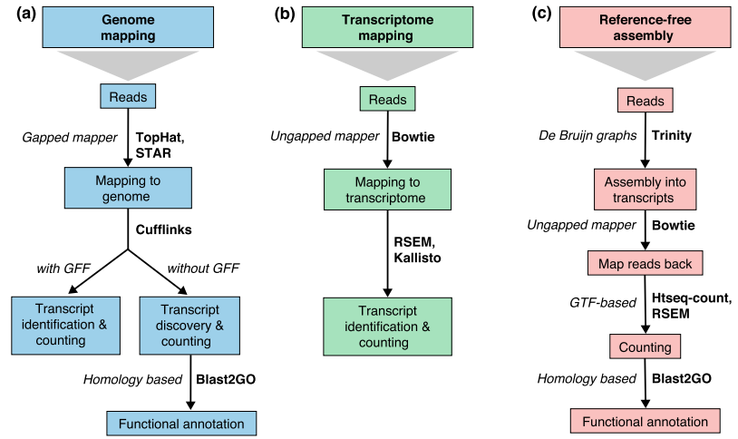

<!doctype html>
<html lang="en">

	<head>
		<meta charset="utf-8">

		<title>RNA seq data analysis</title>

		<link rel="stylesheet" href="../../shared/reveal.js/css/reveal.css">
		<link rel="stylesheet" href="../../shared/reveal.js/css/theme/simple.css" id="theme">

		<!-- Code syntax highlighting -->
		<link rel="stylesheet" href="../../shared/reveal.js/lib/css/zenburn.css">

		<link rel="stylesheet" href="../../shared/css/custom.css" id="theme">

		<!-- Printing and PDF exports -->
        <script>
          if( window.location.search.match( /print-pdf/gi ) ) {
            var link = document.createElement( 'link' );
            link.rel = 'stylesheet';
            link.type = 'text/css';
            link.href = '../../shared/reveal.js/css/print/pdf.css';
            document.getElementsByTagName( 'head' )[0].appendChild( link );
          }
        </script>
		<!--<script>
            if (window.location.search.match(/print-pdf/gi)) {
                document.write('<link rel="stylesheet" href="css/pdf.css" type="text/css">');
            }
        </script>-->

		<!--[if lt IE 9]>
        <script src="../../shared/reveal.js/lib/js/html5shiv.js"></script>
        <![endif]-->
	</head>

	<body>
		<div class="reveal">
            <div class="slides">
                <section data-markdown>
                    <script type="text/template">
                        ## Welcome!

                        

                        The easiest way to **navigate** this slide deck
                        is **by hitting `[space]` on your keyboard**

                        You can also navigate with arrow keys, but be careful because some
                        slides can be nested inside of each other (vertically)
                    </script>
                </section>

                <section data-markdown>
                    <script type="text/template">
                        # RNA seq data analysis
                    </script>
                </section>

                <section data-markdown>
                    <script type="text/template">
                        ## Requirements

                        Before diving into this slide deck, <br/>
                        we recommend you to have a look at:

                        1. [NGS Quality control](../../NGS-QC/slides/index.html)
                        2. [NGS mapping](../../NGS-QC/slides/index.html)
                    </script>
                </section>

                <section>
                    <section data-markdown>
                        <script type="text/template">
                            # What is RNA sequencing?
							
                        </script>
                    </section>

					<section data-markdown>
                        <script type="text/template">
                            ### RNA sequencing
							
                            - RNA is the transcribed form of the DNA and represents its active state
                            - Sequencing enables RNA quantification at single base resolution							
                            - Cost efficient analysis of the whole transcriptome in a high-throuput manner
                        </script>
                    </section>
					
					
					
                    <section data-markdown>
                        <script type="text/template">
                            ### Where my data comes from?
							
                            

                            <small>
                            [*Zang and Mortazavi, Nature, 2012*](http://www.nature.com/ni/journal/v13/n9/full/ni.2407.html)
                            </small>
                        </script>
                    </section>

                    <section data-markdown>
                        <script type="text/template">
                            ### RNA sequencing - Principle

                            

                            <small>
                            [*Korf, Nat Met, 2013*](http://www.nature.com/nmeth/journal/v10/n12/full/nmeth.2735.html)
                            </small>
                        </script>
                    </section>
					
					<section data-markdown>
                        <script type="text/template">
                            ### RNA sequencing - Quantification

                            

                            <small>
                            [*Pepke et al, Nat Met, 2009*](http://www.nature.com/nmeth/journal/v6/n11s/full/nmeth.1371.html)
                            </small>
                        </script>
                    </section>
					
					<section data-markdown>
                        <script type="text/template">
                            ### RNA sequencing - Challanges

							
                            - Sample RNA and the reference genome have a different origin
                            - Incompletely processed RNAs or transcriptional noise
                            - Biases in sequencing (e.g. PCR library preparation)
                            </small>
                        </script>
                    </section>
					
					 <section data-markdown>
                        <script type="text/template">
                            ### RNA sequencing - Benefits

                            

                        </script>
                    </section>

                </section>

                <section>
                    <section data-markdown>
                        <script type="text/template">
                            ## How to analyze RNA seq data?
                        </script>
                    </section>

                    <!--<section data-markdown>
                        <script type="text/template">
                            ### RNA-seq Workflows and Tools

                            

                            <small>
                            [*Turner, 2013*](https://figshare.com/articles/RNA_seq_Workflows_and_Tools/662782)
                            </small>
                        </script>
                    </section>-->
					
					<section data-markdown>
                        <script type="text/template">
                            ### fastq-files

                            <pre><code data-trim data-noescape>
			@4:1:4888:1039:Y 
			TGAACGCTGTTTCCAAGAAATGCTGGAAGAGGTCGATGGGTGTTATCTCTG
			+ 
			IIIHIIIIIIIIIIIIIIIIIIIIIIIIIH!CBCBBBB@=B@A?1@==<@=
                            </code></pre>
							
                            - 50+ million reads per data set (~15 GB data for one human fastq-file)
                            - Unique identifier per read
                            - Nucleotide sequence with single base resolution
                            - Quality score for each base


                        </script>
                    </section>
					
					<section data-markdown>
                        <script type="text/template">
                            ### Data Processing - Overview

                            

                            - Currently no standardized workflow available
                            - Every dataset can have multiple best practices
                        </script>
                    </section>
					
					<section data-markdown>
                        <script type="text/template">
                            ### Data Pre-processing
                            - Adapter clipping to trim the sequencing adapters 
                            - Quality trimming to remove wrongly called bases and those with a low quality
                            - Please, see [NGS Quality control](../../NGS-QC/slides/index.html) for further information
                        </script>
                    </section>
					
					
					<section data-markdown>
                        <script type="text/template">
                            ### Genomic Alignment

                            

                            <small>
                            [*Conesa et al, Genome Biol, 2016*](https://genomebiology.biomedcentral.com/articles/10.1186/s13059-016-0881-8)
                            </small>
                        </script>
                    </section>
					
					<section data-markdown>
                        <script type="text/template">
                            ### Normalization
                            - Within-sample normalization is neccessary to correct for feature length and library-size effects 
                            - [*FPKM/RPKM*](http://www.nature.com/nmeth/journal/v5/n7/abs/nmeth.1226.html) (Cufflinks/Cuffdiff)
                            - [*TMM*](https://genomebiology.biomedcentral.com/articles/10.1186/gb-2010-11-3-r25) (edgeR)
                            - [*DESeq2*](https://genomebiology.biomedcentral.com/articles/10.1186/s13059-014-0550-8) (DESeq2)
							
                        </script>
                    </section>
					
					<section data-markdown>
                        <script type="text/template">
                            ### Differential Expression Analysis
                            
                             
							 
                            <tiny>Account for variability of gene expression across biological replicates with the help of gene counts
                            </tiny>
							 
                        </script>
                    </section>
					
					<section data-markdown>
                        <script type="text/template">
                            ### Number of Replicates for DE Genes

                            

                            
                            <small> [*Conesa et al, Genome Biol, 2016*](https://genomebiology.biomedcentral.com/articles/10.1186/s13059-016-0881-8)</small>
                        </script>
                    </section>
					
					<section data-markdown>
                        <script type="text/template">
                            ### Alternative Splicing Detection
							
                            
                            <small>
                            [*Hooper, Hum. Genomics, 2014*](http://humgenomics.biomedcentral.com/articles/10.1186/1479-7364-8-3)
                            </small>
							
                        </script>
                    </section>
					
					<section data-markdown>
                        <script type="text/template">
                            ### Visualization
                            - Integrative Genomics Viewer ([*IGV*](http://bib.oxfordjournals.org/content/14/2/178.full?keytype=ref&%2520ijkey=qTgjFwbRBAzRZWC)) to have a look at your aligned bam files
                            - [*Sashimi plots*](http://bioinformatics.oxfordjournals.org/content/early/2015/01/21/bioinformatics.btv034) - Quantitative visualization of read coverage along exons and splice junctions
                            - [*CummeRbund*](http://compbio.mit.edu/cummeRbund/manual_2_0.html) - a visualization package for Cufflinks high-throughput sequencing data
                        </script>
                    </section>
					
					<section data-markdown>
                        <script type="text/template">
                            ### Where do I find data?
                            - Sequencing data you prepared yourself or you obtained from your colleques
                            - Sequence Read Archive - [*SRA*](https://www.ncbi.nlm.nih.gov/sra)
                            - Gene Expression Omnibus - [*GEO*](https://www.ncbi.nlm.nih.gov/geo/)
                            - Ensembl - [*e!*](http://www.ensembl.org/info/website/tutorials/sequence.html)
                            - The Cancer Genome Atlas - [*TCGA*](https://tcga-data.nci.nih.gov/docs/publications/tcga/?)
                            - ... our tutorial
                        </script>
                    </section>
					
					
                </section>


                <section data-markdown>
                    <script type="text/template">
                        ### Tutorial

                        - [Reference based RNA seq data analysis](ref_based.html)
                    </script>
                </section>
			</div>

		</div>

		<script type="text/javascript" src="../../shared/reveal.js/lib/js/head.min.js"></script>
        <script type="text/javascript" src="../../shared/reveal.js/js/reveal.js"></script>
        <script type="text/javascript">
            Reveal.initialize({
                slideNumber: !window.location.search.match(/print-pdf/gi),
                history: true,

                theme: Reveal.getQueryHash().theme,
                transition: Reveal.getQueryHash().transition || 'concave',

                dependencies: [
                    { src: '../../shared/reveal.js/lib/js/classList.js', condition: function() { return !document.body.classList; } },
                    { src: '../../shared/reveal.js/plugin/markdown/marked.js', condition: function() { return !!document.querySelector( '[data-markdown]' ); } },
                    { src: '../../shared/reveal.js/plugin/markdown/markdown.js', condition: function() { return !!document.querySelector( '[data-markdown]' ); } },
                    { src: '../../shared/js/highlight.js', async: true, callback: function() { hljs.initHighlightingOnLoad(); } },
                    { src: '../../shared/reveal.js/plugin/notes/notes.js', async: true },
                ]
            });
        </script>

	</body>
</html>
